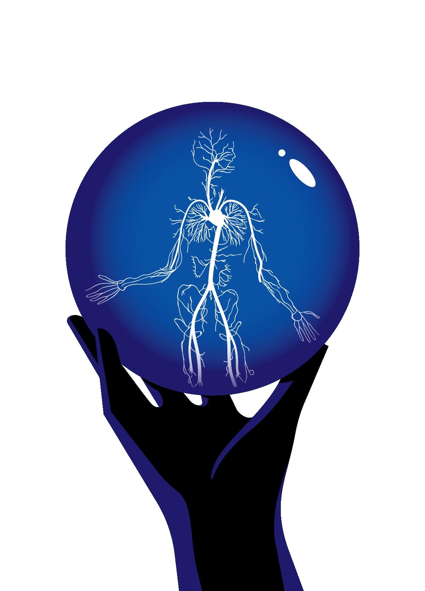

Defination
Oncology is a branch of medicine that deals with the prevention, diagnosis, and treatment of cancer. A medical professional who practices oncology is an oncologist. [1] The name's etymological origin is the Greek word ὄγκος (óngkos), meaning 1. "burden, volume, mass" and 2. "barb", and the Greek word λόγος (logos), meaning "study".[2] The neoclassical term oncology was used from 1618, initially in neo-Greek, in cognizance of Galen's work on abnormal tumors, De tumoribus præter naturam (Περὶ τῶν παρὰ φύσιν ὄγκων).[3]
Cancer survival has improved due to three main components: improved prevention efforts to reduce exposure to risk factors (e.g., tobacco smoking and alcohol consumption),[4] improved screening of several cancers (allowing for earlier diagnosis),[5] and improvements in treatment.[6][7]
Cancers are often managed through discussion on multi-disciplinary cancer conferences[8] where medical oncologists, surgical oncologists, radiation oncologists, pathologists, radiologists, and organ-specific oncologists meet to find the best possible management for an individual patient considering the physical, social, psychological, emotional, and financial status of the patient.[9] It is very important for oncologists to keep up-to-date with the latest advancements in oncology, as changes in the management of cancer are quite common.
Because a cancer diagnosis can cause distress and anxiety,[10] clinicians may use a number of strategies such as SPIKES[11] for delivering the bad news.[12]
Risk factors
Tobacco:
Tobacco exposure is the leading cause of cancer and death from it. [13] Smoking tobacco is strongly associated with increased risk of cancers of the lung, larynx, mouth, esophagus, throat, brain, bladder, kidney, liver, stomach, pancreas, colon, rectum, cervix, and acute myeloid leukemia. Smokeless tobacco (snuff or chewing tobacco) is associated with increased risks of cancers of the mouth, esophagus, and pancreas.[14]
Alcohol :
Alcohol consumption increases risk of cancers of the mouth, throat, esophagus, larynx, liver, and breast. The risk of cancer is much higher for those who drink alcohol and also use tobacco.[15]
Obesity:
Obese individuals have an increased risk of cancer of the breast, colon, rectum, endometrium, esophagus, kidney, pancreas, and gallbladder.[16]
Age:
Advanced age is a risk factor for many cancers. The median age of cancer diagnosis is 66 years.[17]
Cancer-Causing Substances:
Cancer is caused by changes to certain genes that alter the way our cells function. Some of them are the result of environmental exposures that damage DNA. These exposures may include substances, such as the chemicals in tobacco smoke, or radiation, such as ultraviolet rays from the sun and other carcinogens.
Infectious Agents:
Certain infectious agents, including oncoviruses, bacteria, and parasites, can cause cancer.
Immunosuppression:
The body's immune response plays a role in defending the body against cancer, a concept known mainly because certain cancers occur at a greatly increased prevalence among people with immunosuppression.
Specialties
The four main divisions: -
Medical oncology: focuses on treatment of cancer with chemotherapy, targeted therapy, immunotherapy, and hormonal therapy.[83]
-
Surgical oncology: focuses on treatment of cancer with surgery[84]
-
Radiation oncology: focuses on treatment of cancer with radiation.[84]
-
Clinical oncology: focuses on treatment of cancer with both systemic therapies and radiation.[85]
Sub-specialties in Oncology: -
Neuro-oncology: focuses on cancers of brain.
-
Ocular oncology: focuses on cancers of eye.[86]
-
Head & Neck oncology: focuses on cancers of oral cavity, nasal cavity, oropharynx, hypopharyx and larynx.[87]
-
Thoracic oncology: focuses on cancers of lung, mediastinum, oesophagus and pleura.[88]
-
Breast oncology: focuses on cancers of breast
-
Gastrointestinal oncology: focuses on cancers of stomach, colon, rectum, anal canal, liver, gallbladder, pancreas.[89]
-
Bone & Musculoskeletal oncology: focuses on cancers of bones and soft tissue.[90]
-
Dermatological oncology: focuses on the medical and surgical treatment of skin, hair, sweat gland, and nail cancers
-
Genitourinary oncology: focuses on cancers of genital and urinary system.[91]
-
Gynecologic oncology: focuses on cancers of the female reproductive system.[92]
-
Pediatric oncology: concerned with the treatment of cancer in children.[93]
-
Adolescent and young adult (AYA) oncology.[94]
-
Hemato oncology: focuses on cancers of blood and stem cell transplantation
-
Preventive oncology: focuses on epidemiology & prevention of cancer.[95]
-
Geriatric oncology: focuses on cancers in elderly population.[96]
Pain & Palliative oncology: focuses on treatment of end stage cancer to help alleviate pain and suffering.[97]
-
Molecular oncology: focuses on molecular diagnostic methods in oncology.[98]
-
Nuclear medicine oncology: focuses on diagnosis and treatment of cancer with radiopharmaceuticals.
-
Psycho-oncology: focuses on psychosocial issues on diagnosis and treatment of cancer patients.
-
Veterinary oncology: focuses on treatment of cancer in animals.[99]
Emerging specialties: -
Cardiooncology is a branch of cardiology that addresses the cardiovascular impact of cancer and its treaments[100]
-
Computational oncology. An example is PRIMAGE. This four-year EU-funded Horizon 2020 project was launched in December 2018. The project proposes a cloud-based platform to support decision making in the clinical management of malignant solid tumours, offering predictive tools to assist diagnosis, prognosis, therapies choice and treatment follow up, based on the use of novel imaging biomarkers, in-silico tumour growth simulation, advanced visualisation of predictions with weighted confidence scores and machine-learning based translation of this knowledge into predictors for the most relevant, disease-specific, Clinical End Points. [101][102]